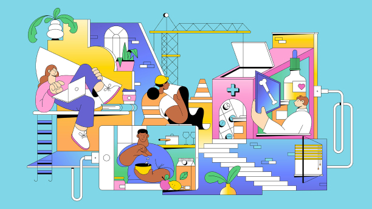

Swedish illustrator,
designer and animator Linn Fritz lives and
works in London where she creates charmingly clean,
precise imagery in a trademark pastel palette for
a wide range of editorial and commercial clients.
Her neat, fluid line work was honed during her
time at Hyper Island, a time which Linn cites
as “hands down one of the best experiences” of her life.
“My Hyper Island journey completely changed me as a person.”
she says, “It pushed me to work harder and
gave me the tools to succeed in the real world.”
The progressive nature of Hyper Island led Linn
to abandon pen and paper and concentrate on what
digital could offer her already well-honed drawings.
digitally, and more room for mistakes.”
Alongside her editorial and commercial projects,
Linn is the co-founder of Panimation, “a community
of equality-driven women, trans and non-binary
friends aiming to connect and support each
other within the animation industry.”
